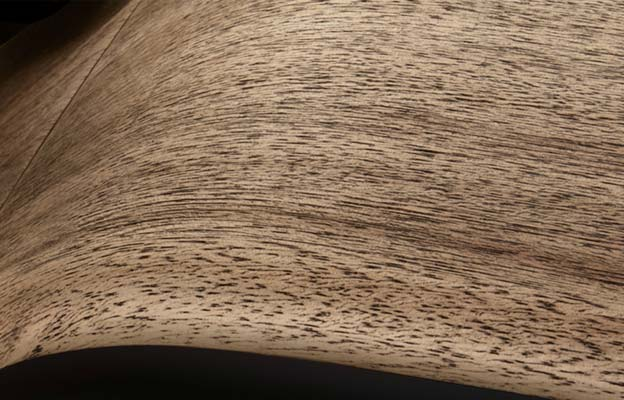

Up to 95% of the BMW i3
is recyclable.
When you fill up with green power or generate your own electricity with solar panels, you get to enjoy totally emission-free mobility. And driving in ECO PRO mode cuts your power consumption and increases your driving range.

OPEN-PORE EUCALYPTUS WOOD
The beautiful open-pore eucalyptus wood used in the BMW i3 is grown in a certified forest, and gets richer in color over time.